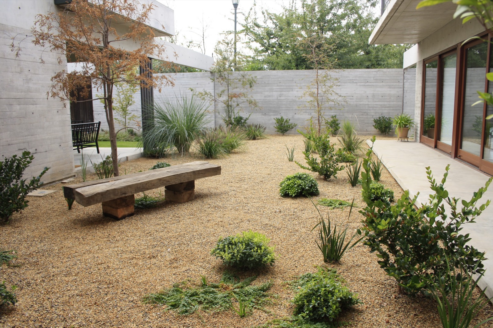
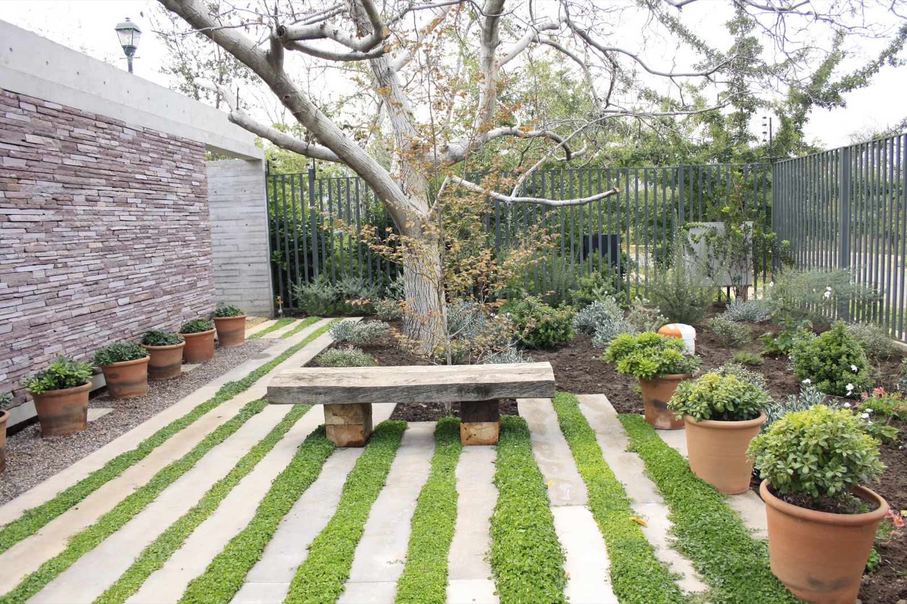
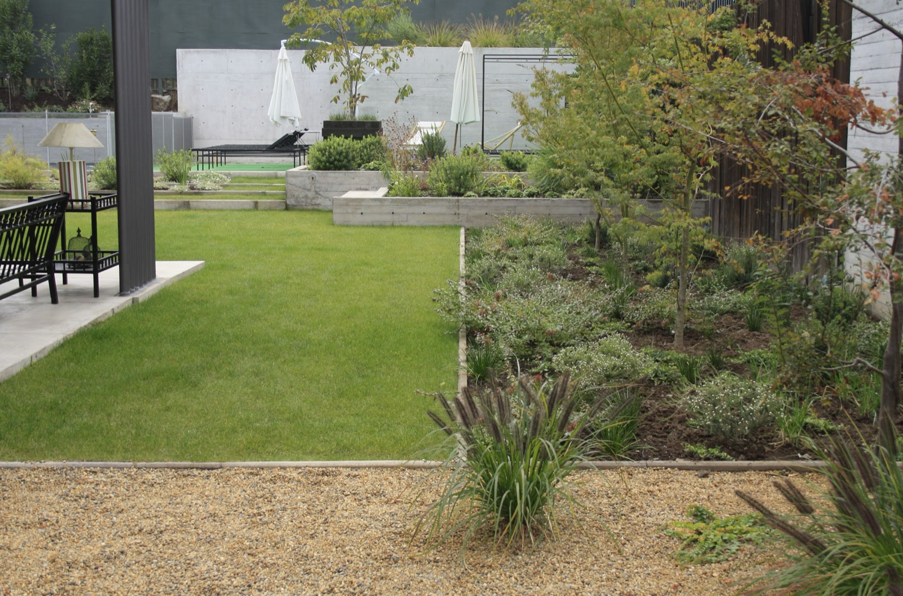
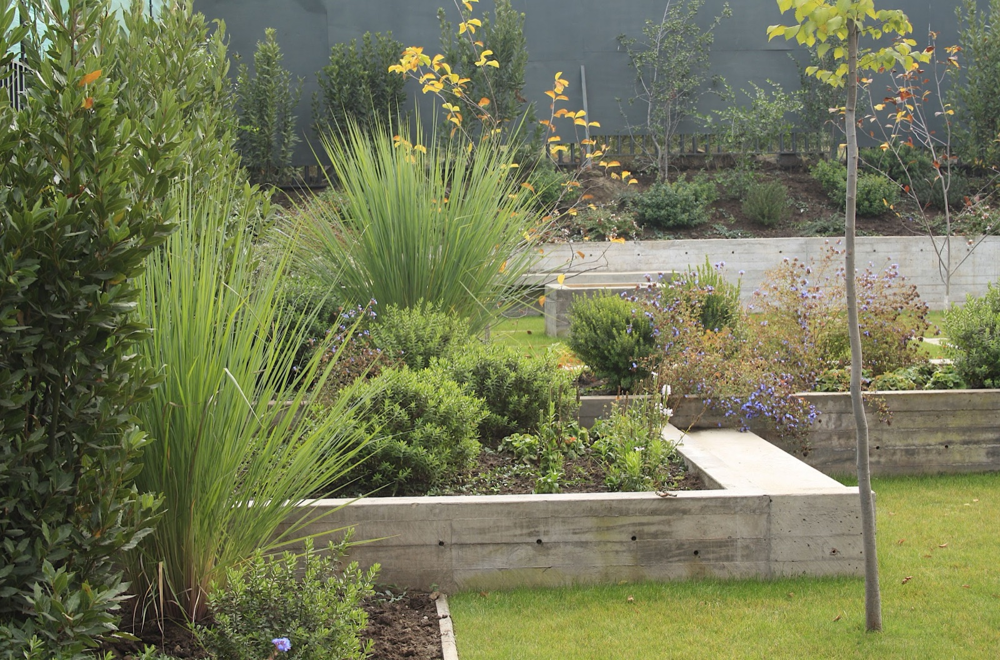
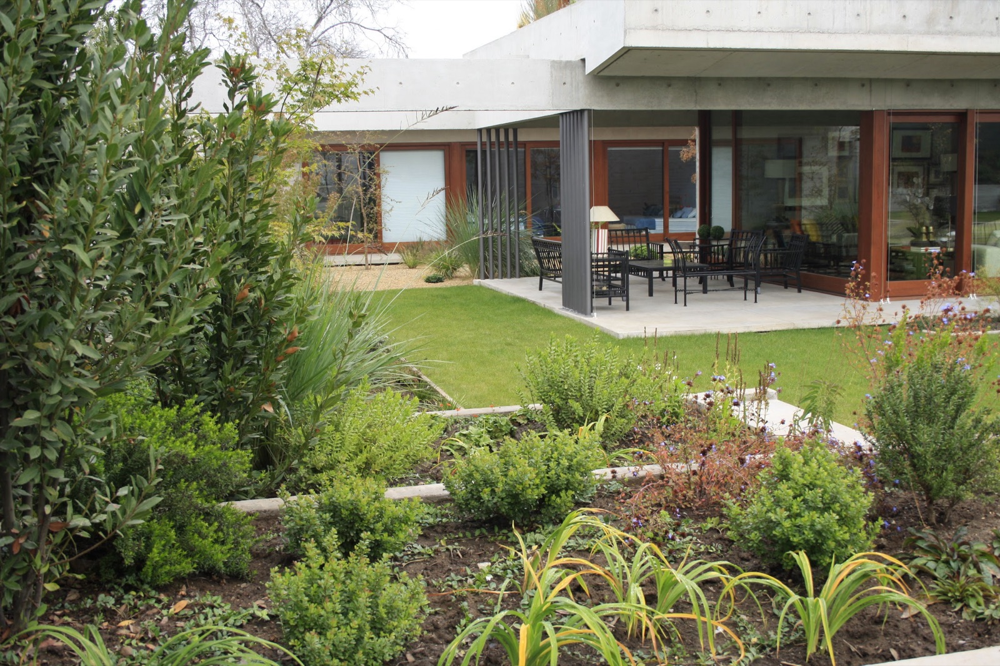
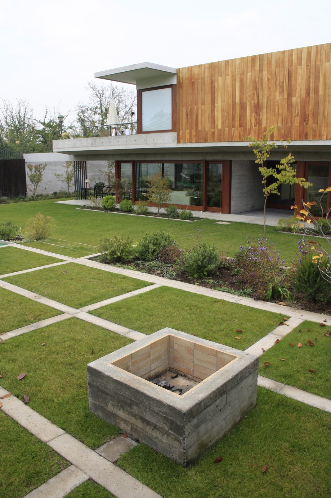
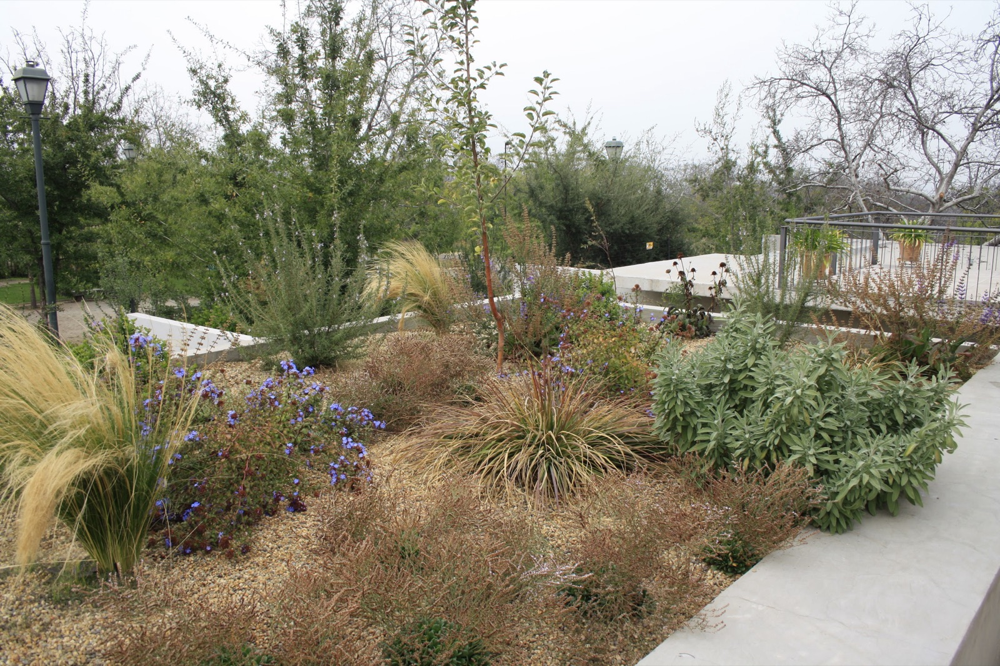
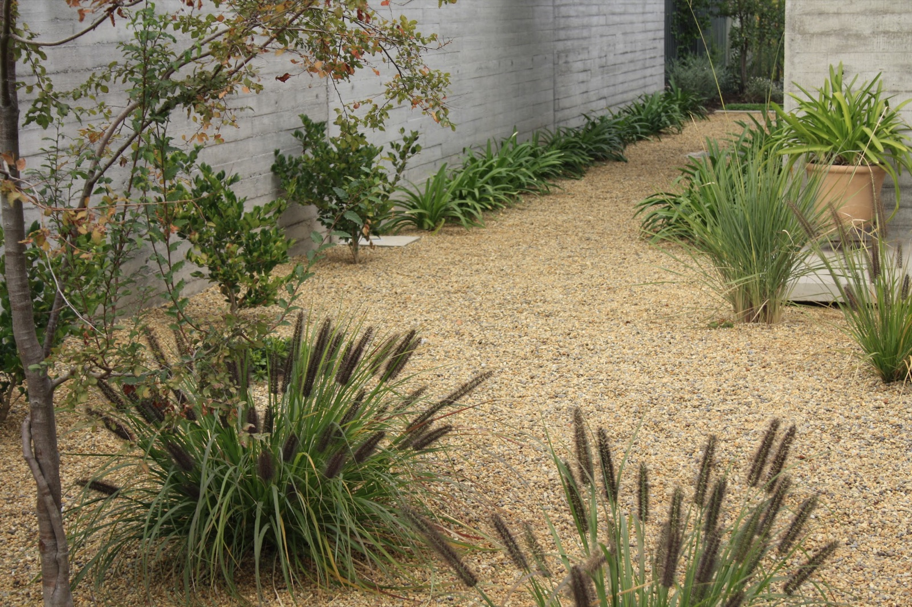
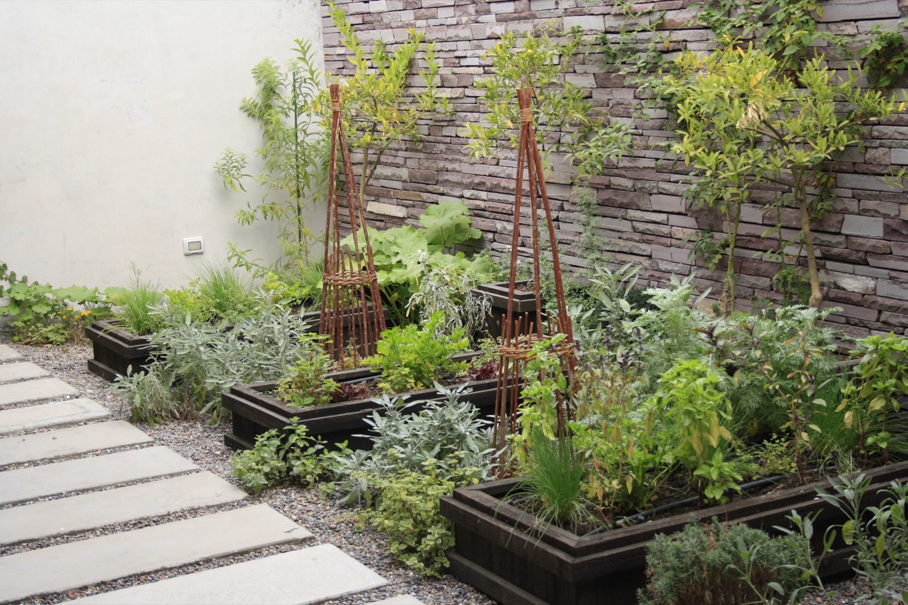
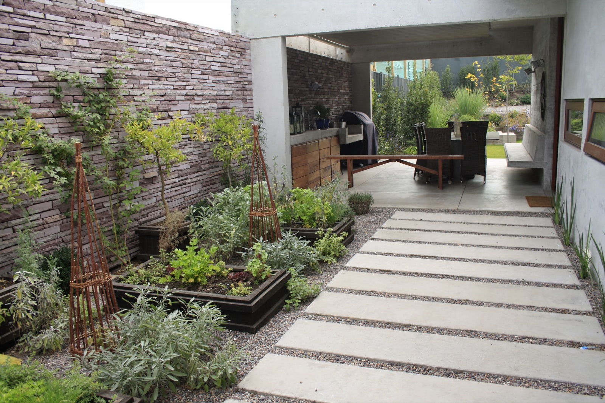

El NocedalLo Barnechea, Santiago
La casa se relaciona con el jardín desde adentro, a través de una sucesión de patios. El jardín no se ve de una vez: aparece en tramos, distinto desde cada ventana y en cada punto del recorrido.

- Ubicación
- Lo Barnechea, Santiago
- Año
- 2010
- Superficie
- 2.000 m²








